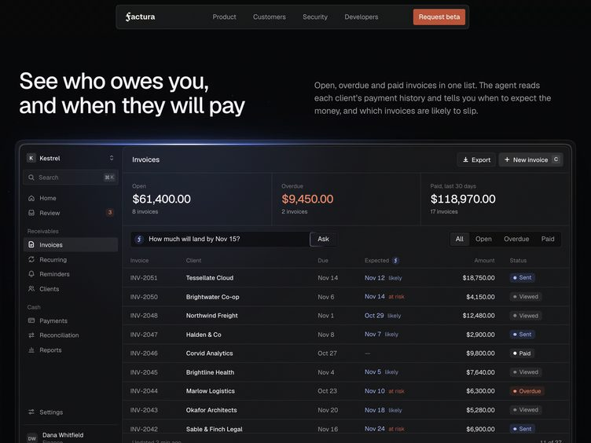

B2B Fintech Website Design
by tubik
SaaS · dashboardSaaS · Dashboard
B2B 金融科技网站 Factura：深色发票管理界面，主标题“See who owes you, and when they will pay”，Open $61,400.00、Overdue $9,450.00、Paid $118,970.00 三组金额镇场，Expected 列直接标 likely / at risk，顶部还有一句“How much will land by Nov 15?”的提问框；收款工具用“三组金额 + 一列回款预期”把“谁欠钱、什么时候还”一次讲清。Factura, a B2B fintech site: a dark invoice dashboard headlines "See who owes you, and when they will pay", anchored by Open $61,400.00, Overdue $9,450.00 and Paid $118,970.00, with an Expected column flagging each invoice likely or at risk and an Ask box reading "How much will land by Nov 15?"; who owes what and when it lands, answered in one screen of three totals and one forecast column.